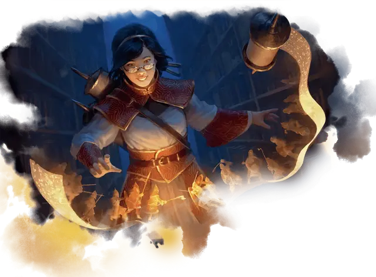

Ученик с Лорхолда
Lorehold Apprentice
Маленький или Средний Гуманоид (Волшебник), любое мировоззрение

Класс Доспеха 12 (15 с доспехом мага)
Хиты 33 (6к8 + 6)
Скорость 30 футов
| мод | спас | ||
|---|---|---|---|
| СИЛ | 10 | +0 | +0 |
| ЛОВ | 14 | +2 | +2 |
| ТЕЛ | 13 | +1 | +3 |
| мод | спас | ||
|---|---|---|---|
| ИНТ | 15 | +2 | +4 |
| МДР | 12 | +1 | +1 |
| ХАР | 11 | +0 | +0 |
Навыки История +6, Проницательность +3, Расследование +6
Чувства пассивное Восприятие 11
Языки Общий, и два любых языка
Опасность 2 (450 опыта)
Бонус мастерства +2
Действия
Удар свитком. . Рукопашная атака заклинанием: +4 к попаданию, досягаемость 30 футов, одна цель. Попадание: 7 (1к10 + 2) дробящего урона плюс 9 (2к8) урона звуком.
Свести к воспоминаниям (перезарядка 6). Грохочущая золотистая энергия извергается вокруг существа, которое ученик может видеть в пределах 90 футов. Существо должно совершить спасбросок Телосложения Сл 12, получая 33 (6к10) урона звуком при провале или половину этого урона при успехе. Конструкты совершают спасбросок с помехой.
Использование заклинаний. Ученик накладывает одно из следующих заклинаний, используя Интеллект в качестве базовой характеристики (Сл спасброска от заклинаний 12):
• Неограниченно: указание [guidance], свет [light];
• 1/день каждое: понимание языков [comprehend languages], поиск предмета [locate object], доспехи мага [mage armor].
Реакции
Мудрость прошлого (2/день). Когда другое существо в пределах 60 футов от ученика промахивается по цели броском атаки, ученик волшебным образом позволяет атакующему повторить бросок атаки. Он должен использовать новый результат.
Описание
Глубоко в разрушающихся руинах и грудах пыльных свитков ученики Лорхолда — сначала в качестве учеников, а затем в качестве магов клятвы — изучают магию прошлого, ищут тайные артефакты и разговаривают с давно умершими искателями приключений, чтобы раскрыть секреты, утерянные временем.
Хотя многие студенты Лорхолда зарываются в старые тома, другие придерживаются более бесцеремонного подхода к учебе и путешествуют по миру, чтобы увидеть, как история творится у них на глазах. Их магия может варьироваться от заклинаний, изменяющих течение самого времени, до сотрясающих взрывов, которые прорываются сквозь старинные руины, а иногда и просто атакуют предметы светящимся свитком.
Учёные Лорхолда
Археоманты факультета Лорхолд черпают свои магические силы в потоке времени и судьбы, а также в том, как эти силы формируют ход истории. Учёные занимающиеся этим обширным мистическим исследованием, разделяются на тех, кто рассматривает историю как непредсказуемую мешанину случайностей, и тех, кто верит, что события образуют идеальную и предсказуемую закономерность.